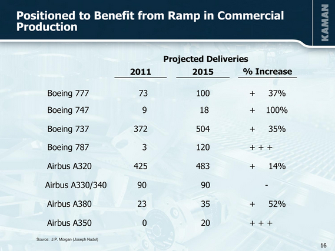

返回主页
波音空客销售对比

GE 2013 PERFORMANCE
德国时间2014年4月7日，空客首架装配完整客舱内饰的A350XWB（以下简称“A350”）测试飞机首次对媒体开放，目前空客已经开始对刚完成的客舱进行相关测试工作。这也证明A350在完成了飞机性能测试后，正式进入最后的商用前功能测试阶段。按照计划，首架A350将于今年10月交付，业内普遍认为，其与波音787这两款新型客机在中远程宽体飞机市场将展开正面交锋。
A350宽体飞机是空客最新一代中型远程宽体飞机系列，它由三款覆盖276-369座级别市场的机型（A350-800/900/1000）组成。截至2014年1月，空客共获得来自全球40家客户的824架A350确认订单。其中，国航订购10架，预计2018年首次交付。
787全球供应链
Boeing versus Airbus（John Newhouse）
Boeing不能懂Airbus，Ford也不懂丰田和Volkswagen。
“Don't follow the crowd, let the crowd follow you.”
�D Margaret Thatcher
“Europe was created by history. America was created by philosophy.”
�D Margaret Thatcher
表6 美国贸易差额主要来源
version:1.0; jobnet@188.com © retter2012.com